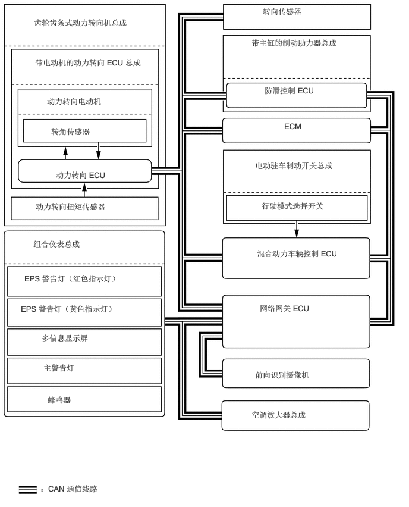

0.594,0.313 2.604,0.792
2,0.469
10
false
齿轮齿条式动力转向机总成
0.615,1.01 2.729,1.479
2.104,0.458
10
false
带电动机的动力转向 ECU 总成
0.979,2.979 3.281,3.188
2.292,0.198
10
false
动力转向 ECU
0.823,1.688 2.823,1.896
1.99,0.198
10
false
动力转向电动机
0.896,2.219 2.5,2.438
1.594,0.208
10
false
转角传感器
0.625,3.531 3.083,3.74
2.448,0.198
10
false
动力转向扭矩传感器
4.604,0.115 5.99,0.323
1.375,0.198
10
false
转向传感器
4.406,0.667 6.073,1.146
1.656,0.469
10
false
带主缸的制动助力器总成
4.635,1.5 5.948,1.833
1.302,0.323
10
false
防滑控制 ECU
4.469,6.479 6.594,6.771
2.115,0.281
10
false
前向识别摄像机
4.406,7.177 6.875,7.542
2.458,0.354
10
false
空调放大器总成
0.583,4.188 2.885,4.396
2.292,0.198
10
false
组合仪表总成
0.427,4.792 2.729,5
2.292,0.198
10
false
EPS 警告灯（红色指示灯）
0.365,5.323 2.833,5.531
2.458,0.198
10
false
EPS 警告灯（黄色指示灯）
0.729,5.833 3.49,6.042
2.75,0.198
10
false
多信息显示屏
0.76,6.354 2.76,6.563
1.99,0.198
10
false
主警告灯
0.833,6.917 1.573,7.135
0.729,0.208
10
false
蜂鸣器
4.979,2.125 5.729,2.51
0.74,0.375
10
false
ECM
4.552,5.313 6.292,5.656
1.729,0.333
10
false
网络网关 ECU
4.5,4.354 5.979,5.073
1.469,0.708
10
false
混合动力车辆控制 ECU
0.708,8.469 3.24,8.719
2.521,0.24
10
false
：CAN 通信线路
4.469,2.813 5.885,3.427
1.406,0.604
10
false
电动驻车制动开关总成
4.583,3.521 6.323,3.729
1.729,0.198
10
false
行驶模式选择开关